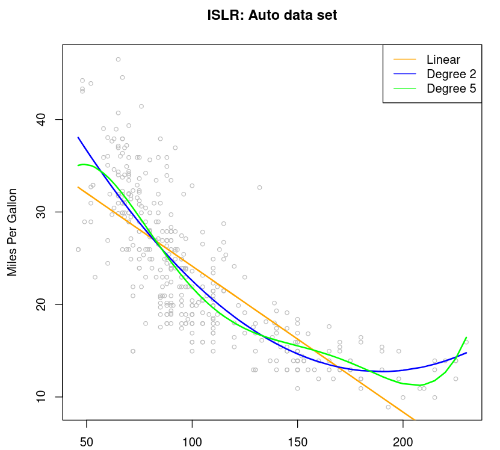

Linear Regression
Main Idea
Linear regression is a linear approach to modeling the relationship between a scalar response (or dependent variable) and one or more explanatory variables (or independent variables). The case of one explanatory variable is called simple linear regression. For more than one explanatory variable, the process is called multiple linear regression. This term is distinct from multivariate linear regression, where multiple correlated dependent variables are predicted, rather than a single scalar variable.
Optimization
The goal in creating a linear regression model is to find the best
parameters θ0, θ1, ...,
θm. Different values of θ are compared
using the sum of residual squares (RSS). The parameters which
produce the smallest value of RSS are considered to be the best.
This is called Least Squares method. It is computationally very
easy to estimate these parameters almost perfectly using the
Gradient Descent Algorithm.

Polynomial regression
Polynomial regression is an extension of linear regression where the relationship between features and target value is modelled as ad-th order polynomial.
The amazing thing about polynomial regression with d-th order polynomial is that it is the same thing as linear regression in extended feature space with features A1, A2, ..., Am
